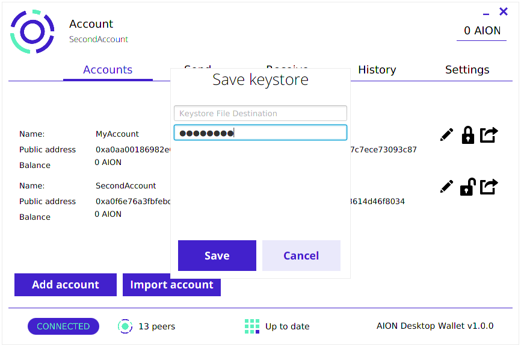

Account Management Overview
Here you will find more information on your Aion account, including set-up and interaction with the Aion Desktop Wallet.
This includes:
- prerequisites of the Aion Desktop Wallet
- set-up and sync of the Aion kernel
- wallet installation and interaction
Prerequisites:
Before we begin, make sure you have the following:
Virtual MachineIf you do not wish to partition your hard disk to install Ubuntu, you can run a virtual machine (Note: the sync of the Aion kernel may take significant memory). Some resources to run a VM are listed below:
Aion Desktop Wallet Set-Up
Please note that this wallet runs on your desktop and not through a cloud. As such, you will need to have set up a node (steps below in this guide) in order run the wallet, and your node will have to be fully synced before you can transact through the Aion Desktop Wallet.
This guide will cover the following modules:
- Aion kernel set-up and sync
- Aion Desktop Wallet installation
- Interaction with Aion Desktop Wallet
Sync Aion Kernel
- Download the most recent Aion binary file aion-{version}.tar.bz2 here
- Extract the binary file to a desired destination
- Navigate to the newly created aion directory
- Open up terminal here and run the command
./aion.sh
NoteThe initial syncing process will take multiple hours. You can proceed with the steps to install your Aion wallet; however, transactions through the wallet will not be accepted until the kernel is finished syncing.
Install Aion Wallet
- Download the Aion Desktop Wallet repository aion_wallet-{version}.tar.bz2
- Extract the folder to the desired directory
- Navigate to the newly created aion_wallet directory
- Open up terminal here and run the command
./aion_wallet.sh
Interact with Aion Wallet
Add account
There are two options to initialize your wallet:
- Recover Previous Wallet (if you have an existing Aion Desktop Wallet with the corresponding mnemonic and password)
- Create New Account (new Aion Desktop Wallet user)
Recover Wallet
- Input mnemonic
- Input corresponding wallet password
Create an Account
- Select an account name (this can be edited later)
- Select a password
- Confirm chosen password
- Save and backup the seed mnemonic that appears - you will need it if you wish to recover your wallet later:
NoteClicking on "Add account" later will automatically generate an account in your wallet. These accounts cannot be removed from the wallet.
Import account
There are two options to import an existing account:
- Import using a keystore file and password
- Import using a private key (you will be asked to create a password for it)
NoteThere is a "Remember Me" option when importing accounts. Selecting this will display your imported accounts even if you re-launch your wallet. If this option is not selected, you will have to reimport these accounts if you re-launch the Aion Desktop Wallet.
Import with Keystore File
- Click on the keystore space, and navigate to select your desired Keystore UTC file
- Input corresponding keystore password
Import with Private Key
- Input your private key (tutorial to obtain private key here)
- Select a password to use to unlock the account (Note: input this password correctly, currently there is no way to change this password)
Export account (optional)
You may wish to save your accounts created on the Aion Wallet elsewhere. In this case, you will need to export the wallet (using the icon right of the accounts listing) and save the keystore file in your desired location. Note that the password you input here will be the new password to access the keystore file:
Send AION
- Make sure the account you wish to send AION from is unlocked under the "Accounts" listing (click on the lock icon to unlock an account)
- Navigate to the "Send" option in your wallet, and verify your account information on the left
- On the right panel, input the address you are sending to, and the amount to send in number of AION
- Click on "Generate transaction" to send the AION, and you will be notified when the transaction finishes
Possible Errors
Sending transaction... [ERROR] Make sure that your Aion node is fully synced. You transaction will not occur unless it is up to date.
You have transactions that require your attention! [ERROR] The transaction failed, click on the notification to open a pop-up where you may re-submit the transaction.
Receive AION
You can send your public wallet address to the sender by:
- scanning the QR code to display the wallet address
- copying the address to your desktop clipboard
Additional Configuration
Connect with a Remote Node
If you wish to sync your wallet to an Aion node that is not running on your local machine, you may do so after making two changes in:
- the configuration for the Aion kernel
- your Aion Desktop Wallet "Settings" address
Configure Aion kernel
You will first have to ensure that the config.xml file found in the aion/config folder of your aion kernel repository is modified such that the Java API accepts remote access. This will allow your wallet to connect with the node.
- Navigate to the aion/config/config.xml file
- Change the IP address of the Java API section to 0.0.0.0
- Save the config file and re-launch the kernel and wallet for changes to take effect
<java active="true" ip="0.0.0.0" port="8547">
Configure wallet
After configuring the node you wish to connect to, you will need to change wallet settings so the IP address points to the machine running it.
- Launch the Aion Desktop Wallet and navigate to the "Settings" tab
- Change the IP from 127.0.0.1 to the address of the machine currently running the Aion node you wish to connect to
- Click "Apply" to save your changes
Delete or Switch Wallet
If you wish to no longer use the wallet stored on your machine, or switch to another one, you have the option to delete the current wallet database and restart a fresh wallet (or restore an existing Aion wallet from its seed mnemonic).
NoteThe deletion of your wallet database is permanent - you will not be able to recover the accounts unless you have the mnemonic and password backed up.
- Open up terminal and navigate to the home directory (or run
cdfrom any directory) - Remove the hidden file .aion using the command
rm -r .aion - Relaunch the Aion Desktop Wallet, you should notice that you will be prompted to add an account from seed mnemonic or create a new account and password